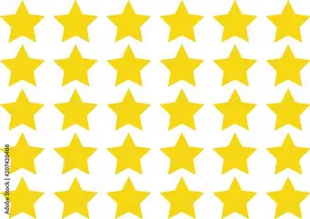

kokapena
Zinemak Usurbilen dago, Urbilen, eremu eroso batean. Horrek esan nahi du lotura onak daudela, eta sarbidea erraza dela, bai autoz bai garraio publikoaren bidez. Horrek laguntzen du pertsona asko bertara joateko aukera izaten.
aurrekontua / prezioak
Tarifa batzuk beste zinemekin alderatuta lehiakorrak dira, bereziki egun arruntetan edo saio ez-espezializatuetan.
eCartelera
hobekuntzak eskaintza berezietan
Urbilek “OcioPlan” edo “SuperPlan” bezalako eskaintzak ditu — zinema-sarrera bat eta menu bat edo beste plan osagarri bat bateratzea — eta hori, aisialdi eta kultura konbinatu nahi dutenentzat oso aukera erakargarria da.
urbil.es
+1
euskara eta kultura
Zinemaren eskaintzan, sarritan euskarazko emanaldiren bat izaten da, edo zinema haur eta gazteei zuzendutako programetan — “Gazteentzako zinema: Txori Urdin” adibidez — euskarazko edukiak agertzen dira. Horrela, herritarrek aukera dute euskara erabiltzeko aisialdian eta zinema esperientzia kulturalean parte hartzeko.
